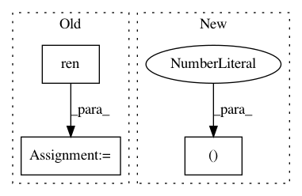

66de870522c6fd496f87978a03153ef1ac4c7f76,dipy/viz/tests/test_ui.py,,test_button,#Any#,32
Before Change
print("Using VTK {}".format(vtk.vtkVersion.GetVTKVersion()))
filename = "test_ui.log.gz"
recording_filename = pjoin(DATA_DIR, filename)
renderer = window.ren()
// Define some counter callback.
states = defaultdict(lambda: 0)
After Change
// /Button
// Panel
panel = ui.Panel2D(center=(440, 90), size=(300, 150), color=(1, 1, 1), align="right")
panel.add_element(button_test, (0.2, 0.2))
// /Panel
In pattern: SUPERPATTERN
Frequency: 3
Non-data size: 3
Instances
Project Name: nipy/dipy
Commit Name: 66de870522c6fd496f87978a03153ef1ac4c7f76
Time: 2016-11-13
Author: ranveeraggarwal@gmail.com
File Name: dipy/viz/tests/test_ui.py
Class Name:
Method Name: test_button
Project Name: nipy/dipy
Commit Name: 6c524d66dcd30d98a0f0c991252a3be644fa58ef
Time: 2013-09-11
Author: stjeansam@gmail.com
File Name: doc/examples/compute_SNR_in_corpus_callosum.py
Class Name:
Method Name:
Project Name: nipy/dipy
Commit Name: cf7d0bdc4133ea3248e054fa93aa2b5a6f8f2fca
Time: 2013-09-11
Author: stjeansam@gmail.com
File Name: doc/examples/compute_SNR_in_corpus_callosum.py
Class Name:
Method Name: